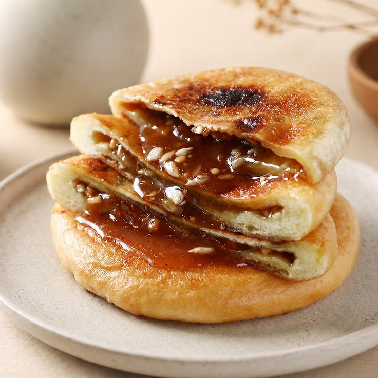
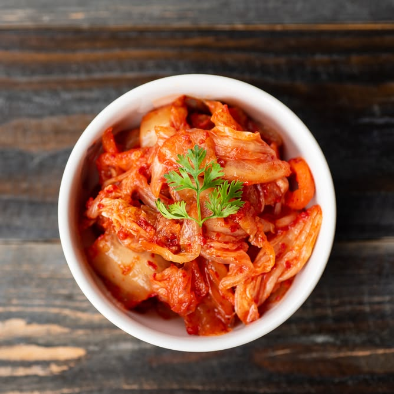
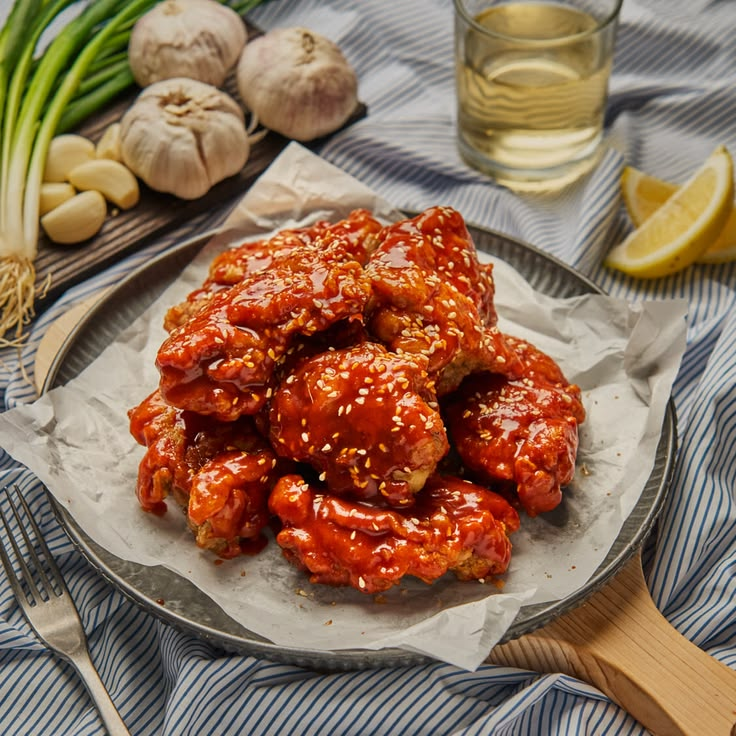
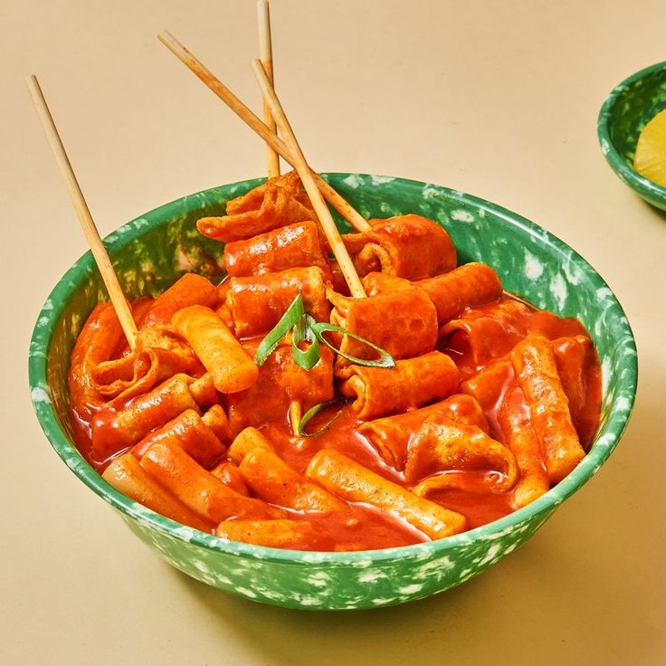
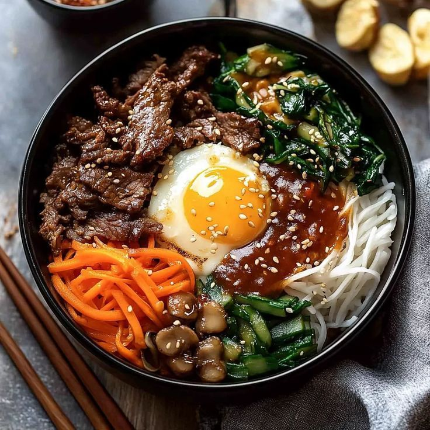
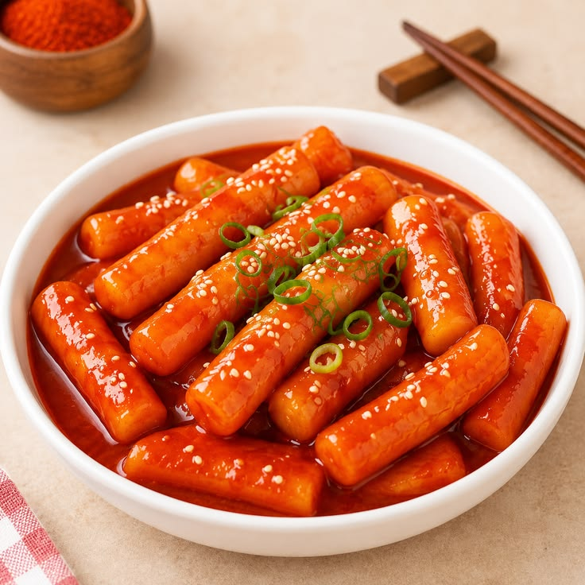
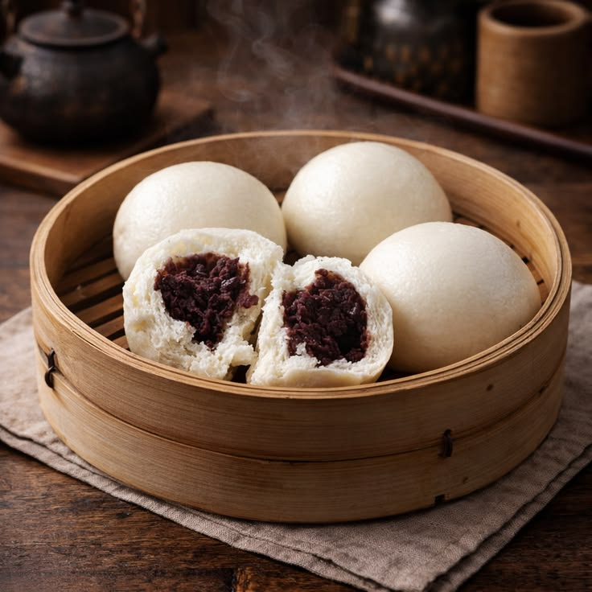

chicken ramen
Ramen dengan kuah kaldu ayam gurih, topping ayam lembut, telur, dan daun bawang segar.
Rp. 35.000

ebi tempura ramen
ramen khas Jepang yang dipadukan dengan topping utama udang goreng tepung (ebi tempura) yang renyah
Rp. 35.000

Hotteok
pancake khas Korea Selatan yang biasanya dibuat dari adonan tepung terigu, ragi, air atau susu, lalu diisi campuran gula, kayu manis
Rp. 33.000

legendary ramen
rRamen spesial dengan kuah kaldu kaya rasa, topping ayam, telur, jamur, dan nori yang menggugah selera.
Rp. 35.000

kimchi
Fermentasi sawi putih khas Korea dengan cita rasa pedas, asam, dan segar yang menggugah selera.
Rp. 34.000

chicken hot samyang
Potongan ayam lembut yang dibalut saus Samyang super pedas, dengan cita rasa gurih dan taburan wijen
Rp. 35.000

Salted Egg Ramen
Ramen dengan kuah creamy bercita rasa telur yang gurih, dilengkapi topping telur lembut dan daun bawang segar
Rp. 33.000

Beef ramen
Ramen dengan kuah kaldu sapi gurih, dilengkapi irisan daging sapi lembut, telur, dan daun bawang segar
Rp. 45.000

oddeng
Odeng khas Korea berbahan dasar olahan ikan, disajikan dengan kuah kaldu hangat yang gurih dan lezat
Rp. 31.000

bibimbab
Nasi khas Korea dengan aneka sayuran, daging, telur, dan saus gochujang pedas gurih
Rp. 34.000

toppoki
Kue beras khas Korea bertekstur kenyal, dibalut saus gochujang pedas manis yang kaya rasa
Rp. 36.000

bakpao
Bakpao kukus bertekstur lembut dan empuk dengan isian cokelat lumer yang manis dan lezat
Rp. 31.000